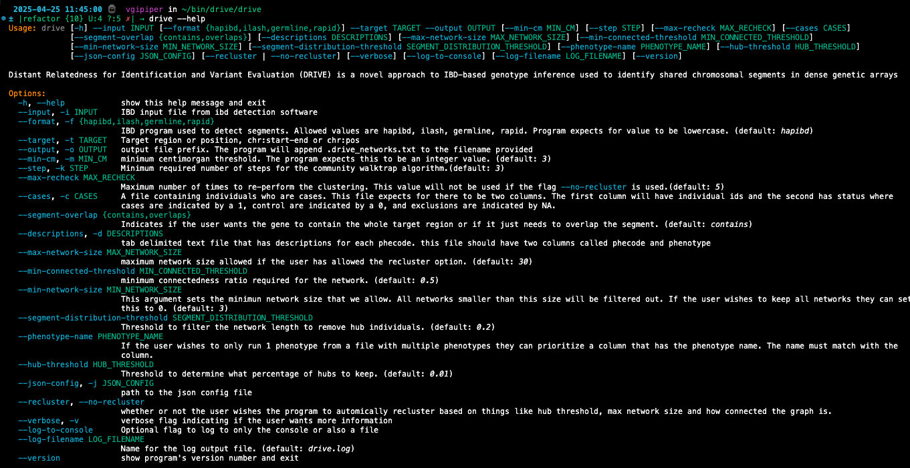

DRIVE Inputs#
The DRIVE program has two subcommands shown in the image below.
{kind=link}
Inputs for the clustering subcommand:#
required:#
input: This input file describes the pairwise shared IBD segments within the cohort. The file is formed as the result of running hap-IBD, iLASH, GERMLINE, or RapID.
format: This argument indicates which ibd program that was used to identify IBD segments. Currently the program supports values of hapibd, hap-IBD, iLASH, RapID, and GERMLINE.
target: This argument is the region of interest that you wish to cluster around. The program will filter out segments that don’t contain this entire region. This argument should be of the format chromosome_number:start-end (eg: 7:1234-2345).
Warning
Make sure that the base position in the file corresponds to the same build of the human genome as what you used in the IBD detection software. If the builds are different then you will get inaccurate results.
output: This argument will indicate a path to write the output file to. The user should provide a file path without an extension and the program will add the extension .drive_networks.txt.
optional:#
min-cm: DRIVE will use this argument to filter out all pairwise IBD segments that are shorter than the provided threshold. This value defaults to 3cM.
step: This argument indicates the number of minimum steps that the random walk will use to generate a network. By default this value is 3.
max-recheck: This value indicates the maximum number of times the program will redo the clustering in an effort to perform tree pruning. This argument defaults to 5 if the user doesn’t provide any value. This argument is ignored if the flag –no-recluster is provided.
cases: A tab separated text file containing individuals who are either cases, controls, or exclusions. This file expects for there to be at least columns. The first column will have individual ids. All other columns in the file are for each phenotype being analyzed. Each column is expected to have the individual’s status where cases are indicated by a 1, controls are indicated by a 0, and excluded individuals are indiciated by -1, -1.0, N/A, or a blank space. Excluded individuals will not be included in the binomial test but will be included in the clustering analysis. The file is expected to have a header where the first column is grid or grids (case insensitive) and the remaining columns are the phenotype names. If this argument is not supplied than the program will not perform the binomial test that determines enrichment of phenotypes within the identified networks.
descriptions: This argument provides the path to a tab separated text file that contains a text description of each phenotype. This file is typically supplied when the user is running the program phenomewide with PheCodes but can be provided for any phenotype. This file is expected to have two columns called “phecode” and “phenotype”
max-network-size: This argument provides one of the thresholds that determines if a network needs to be re-clustered. max-network-size indicates the largest size of a network that is permitted. If a network is bigger than the max-network-size argument and it is smaller than the min-connected-threshold argument then the network will be re-clustered.
min-connected-threshold: This argument provides one of the thresholds that determines if a network needs to be re-clustered. min-connected-threshold indicates how connected we want the network to be. If the network is sparser than the min-connected-threshold and is larger than the max-network-size then the network will be re-clustered.
min-network-size: This argument sets a threshold for the minimum size a network has to be to be included in the analysis. Users can filter out pairs or trios but changing this value. By default this argument is set to 2
segment-distribution-threshold: Threshold to filter the network length to remove hub individuals
segment-overlap: Flag indicating whether we only want to keep segments which fully contain the target locus or if we want to consider segments which also just partially overlap the target locus. The accept values are “contains” and “defaults”.
phenotype-name: If the user passes a phenotype table with multiple phenotypes then this flag can be used to specify just one phenotype for the analysis. If this flag is not used then the program will use all phenotypes in the provided phenotype table.
hub-threshold: Threshold to determine what percentage of hubs to keep
json-config: This argument provides a path to the config.json file that DRIVE uses to identify what plugins the user wishes to use. DRIVE uses the plugin architecture to allow users to add new functionality to the program. The program comes with default plugins to determine enrichment pvalues and to write networks to a file. These plugins are listed in the config.json file found within the programs install directory. If the user wishes to use DRIVE in its standard form then they should just use the default value. If the user wishes to extend DRIVE then they can read more about the plugin system and how to add new plugins HERE.
recluster: Flag indicating if the user wishes to recluster networks or if they wish to only return the initial networks without redoing the clustering algorithm. If the user wishes to use reclustering then DRIVE will use the values for hub-threshold, segment-distribution-threshold, min-connected-threshold, and max-network-size. If the user wishes to not perform reclustering, then they should pass the flag “–no-recluster”.
verbose: Flag indicating how verbose the user wants the drive program to be. The flag can be combined with itself to indicating more verbosity (-v = verbose while -vv = debug mode). By default the program will provide minimum information. If the user passes -v the program will run in verbose mode. If the user passes -vv then it will run in debug mode. Debug mode will generate a lot of logging output so use with caution if you are writting to a log file..
log_to_console: Flag indicating if the user wishes to write output to the console. If this flag is passed then output will be written to the console. Otherwise the output will only be written to the log file.
log_filename: Argument providing a name for the log file generated by drive. This log file will be written to the parent directory from the “output” argument.
—
version: Flag that outputs the version of DRIVE that the user is using
Inputs for the dendrogram subcommand:#
required:#
input: This input file is the output from running the cluster subcommand of DRIVE. The file has the suffix “*.drive_networks.txt”. No formatting of this file has to be done before running the dendrogram command.
ibd: This file is the input IBD file from the drive cluster command. It should contain the shared Pairwise IBD segments detected from either hap-IBD, iLASH, RapID, or GERMLINE
target: This argument is the region of interest that you wish to cluster around. The program will filter out segments that don’t contain this entire region. This argument should be of the format chromosome_number:start-end (eg: 7:1234-2345).
network-id: ID of the network that the user wishes to make a dendrogram for. This value needs to exactly match the clstID value from the DRIVE “*drive_networks.txt” file. In this analysis “1” and “1.0” will not be interpreted as the same number. This argument cannot be provided if the “–generate-all” flag is used
generate-all: Flag to indicate that the user does wish to generate dendrograms for all of the networks in the DRIVE file. This networks will all be in the specified output directory and will be identified by the network ID. This produces a lot of files (>10,000) which is why we require the user specifies that they want to generate all of the dendrograms. Due to drawing limitations DRIVE will only generate dendrograms for networks >= 3 individuals or <= 30 individuals. These thresholds can be changed with optional parameters.
optional:#
format: This argument indicates which ibd program that was used to identify IBD segments. Currently the program supports values of hapibd, hap-IBD, iLASH, RapID, and GERMLINE. The default value is hapibd.
min-cm: DRIVE will use this argument to filter out all pairwise IBD segments that are shorter than the provided threshold. This value is in centimorgans and defaults to 3.
segment-overlap: Flag indicating whether we only want to keep segments which fully contain the target locus or if we want to consider segments which also just partially overlap the target locus. The accept values are “contains” and “defaults”.
max-network-size: Threshold for the largest network to make a dendrogram for. This flag is only used if the user selects the “–generate-all” flag. Default value is 30 individuals.
min_network-size: Threshold for the smallest network to make a dendrogram for. DRIVE can return 2 person networks but dendrograms of these networks are not that informative. Therefore for computationally efficieny we exclude these small networks. A user can change this value to also exclude even larger networks if they so wish. Default value is 3 individuals.
font-size: Size of the text for the leaf nodes of the dendrogram (The individuals’ ids). This value defaults to 15 but may have to be changed if you know you have a large network to make a dendrogram for.
title: Title that is written on the dendrogram image. This title is not the same as the filepath. By default this value is “test dendrogram”
keep-temp: To make the dendrogram DRIVE has to create a distance matrix where the measure of distance between 2 individuals is just the inverse of the IBD segment length. This file is not save by default to perserve space. If the user passes this flag then the file will be saved in the specified output directory in a temp folder called “network_#_temp”
verbose: Flag indicating how verbose the user wants the drive program to be. The flag can be combined with itself to indicating more verbosity (-v = verbose while -vv = debug mode). By default the program will provide minimum information. If the user passes -v the program will run in verbose mode. If the user passes -vv then it will run in debug mode. Debug mode will generate a lot of logging output so use with caution if you are writting to a log file..
log_to_console: Flag indicating if the user wishes to write output to the console. If this flag is passed then output will be written to the console. Otherwise the output will only be written to the log file.
log_filename: Argument providing a name for the log file generated by drive. This log file will be written to the parent directory from the “output” argument.